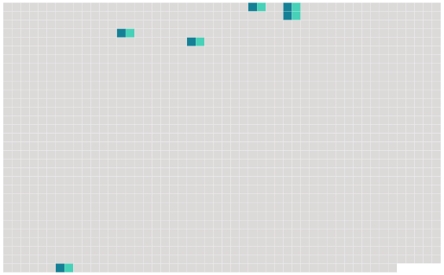

Longueur nb maillons : 6 mentions |
 |
246 Espèces habituellement citées dans 249 les classifications classiques : • Equus burchellii 250 Gray, 251 1824 ou Zèbre de Burchell ( zèbre des plaines, synonyme [du suivant] ) • [Equus quagga] 256 Boddaert, 255 1785 • Equus grevyi 254 Oustalet, 257 1882 • Equus zebra 258 Linnaeus, 259 1758
264 Une nouvelle classification a été proposée en 266 2004 par 267 les Anglais 270 C. P. Groves et 271 H. B. Bell, d'après 272 l'observation traditionnelle 273 du pelage et 274 des crânes de ces animaux : • 275 Sous-genre Dolichohippus avec 276 une seule espèce : • Equus grevyi • 277 Sous-genre Hippotigris avec 278 trois espèces : • [Equus quagga] , avec 279 six sous-espèces : • 280 Equus quagga quagga ( éteint ) • 281 Equus quagga burchellii • 282 Equus quagga boehmi, • 283 Equus quagga borensis • 284 Equus quagga chapmani • 285 Equus quagga crawshayi • Equus zebra • 287 Equus hartmannae [40 phrases]
Il s'agit d'436 un élevage sélectif du Zèbre des plaines ( [Equus Quagga] ) dans 437 le but de retrouver 438 l'apparence de 439 l'animal disparu après avoir découvert 440 la grande similitude de 441 l'ADN 442 des spécimens disparus avec 443 celui des zèbres modernes. |
 |
Il est possible de télécharger la ressource sur la page Ortolang |
Si vous avez des questions ou vous voyez des erreurs, merci d'envoyer un mail à silvia.federzoni89@gmail.com |